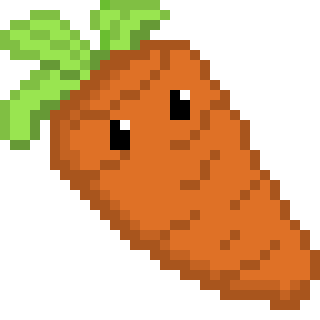

Battle back the incoming waves of Kitchen Utensils with the help of some Produce. For every utensil you push back, earn more credits to get even more produce.
Survive against waves of kitchen utensils for as long as you can. The kitchen utensils will get tougher and faster as the game goes on, but so will your defense as you stop utensils and earn more credits to bolster your battalion of produce.
Play side-by-side against an opponent in a multiplayer mode. Try to last longer than your opponent as waves of kitchen utensils repeatedly attempt to reach the goal. There is a twist, as players can choose to spend their credits not only boosting their defenses, but also spending money to send utensils to the opposing player. Test your strategy as you try to balance attack and defense in multiplayer!
Meet the Carrot
The sharpest vegetable in the drawer, the carrot is a single target tower that is cheap. The carrot is pivotal for stopping any utensils from reaching the goal
Game created by: Riley Richards, Junwon Song, and Mathew Tang
Nice Defense Game is a child frienly Tower Defense game. The goal of the game is to place down different types of food in order to prevent the kitchen appliences from making it to the end of the map. If you survive all the waves you win.